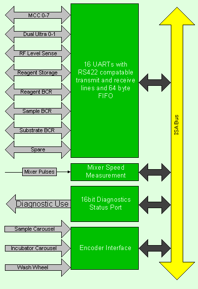
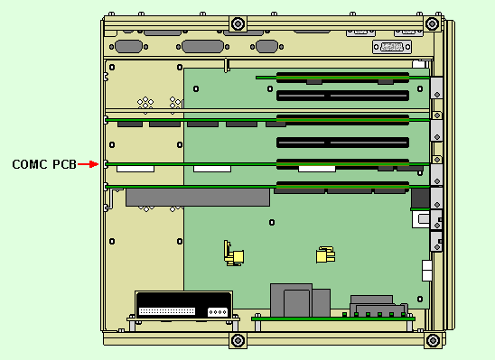

Communications PCB (COMC) Operating Principles
This document details the operating principles for the communications PCB (COMC)
PCB Function
The communications PCB serves as a serial communication interface as directed by the CPU PCB.
The communications include interactions with:
- MCC PCBs ( 0 through 7 ).
- Dual Ultrasonics PCBs ( 0 and 1 ).
- DxI 600 has one ultrasonic PCB.
- DxI 800 has two ultrasonic PCBs.
- RF Level Sense PCB.
- Reagent Storage Interface PCB (status LEDs, and motor encoders).
- Reagent Bar Code Reader.
- Sample Bar Code Reader.
- Substrate Bar Code Reader.
- Mixer Speed Sensor.
- Sample Carousel Motor Encoder.
- Incubator Carousel Motor Encoder.
- Wash Wheel Motor Encoder.
The Communications PCB also provides:
- Reset to all distributed PCBs when a PC reset command is detected on the ISA bus.
- A 16-bit status output port for board level diagnostic use.
- Pulse-width modulation (PWM) to control the main blower fan speed and all cooling and heating devices (except the reagent pipettor heaters).

PCB Location

Note: The DxI 600 and DxI 800 use the same COMC PCB located in the same position.
Operational Overview
- The communications PCB provides serial communications interface for instrument modules and some miscellaneous digital I/O devices.
- The logic is based on an Altera EPLD device.
- A standard universal asynchronous receiver transmitter (UART) controls the serial ports providing:
- Asynchronous speeds of up to ~1.5 Mbps.
- A 64-byte FIFO for transmit and receive to reduce the number of host interrupts per message transaction.
- All devices on this PCB are accessed and controlled via direct I/O from the host processor over the ISA bus.
Component Locations
Specific information regarding the components for this PCB are not provided. Service personnel are advised to not change or repair any PCB unless directed to do so by STS Chaska.
PCB Features and Functions
| Component | Function and Description |
|---|---|
| RS422 Differential Serial Ports | Differential mode serial communication is provided for control of distributed modules in the instrument. This provides protection from common mode noise on the receive and transmit data lines. The RS422 drivers are limited to a maximum speed of 256 kbps for reduced EMI radiation. The communications speed for MCC channels is 56 kbps and all others is 9.6 kbps.
RS422 communication is provided for:
|
| Carousel Encoder Interface | Two incremental encoder (16-bit) channels provide an independent measurement of angular position for the storage wheels. The measurement is intended for movement verification purposes, not as part of the closed-loop positioning system. A pair of RS422 differential interfaces connects the quadrature signals to the decoding logic on this PCB. The PCB presents a 16-bit register interface of the wheel position to the system processor.
Encoder interfaces are provided for:
|
| Pulse-Width Modulator Line Driver | Provides pulse-width modulation (PWM) signals that control:
|
| Mixer Speed Interface | Reads the tachometer signal from analytical module Interface PCB. This signal is used to calibrate mixer speed control and monitor mixer speed while running. |
| System Reset Capability to All Distributed PCBs | This capability is provided to reset all of the distributed PCBs when a PC reset command is detected on the ISA bus. Individual PCB reset is also possible. |
Interacting Devices
The COMC PCB interacts with these devices:
- CPU backplane PCB
- CPU PCB (operating commands)
- DAQC PCB (temperature data determines PWM control)
- MCC backplane (the following devices connect through the MCC backplane:)
- MCC PCBs (comm)
- Ultrasonics PCB (comm)
- Analytical module I/F PCB (mixer tach)
- Analytical power I/F PCB (motor encoders and heaters PWM)
- Reagent storage I/F PCB (substrate and reagent BCRs, comm for motor encoders and display panel LEDs)
- RF level sense PCB (comm through sample pipettor I/F PCB)
- Sample storage IF PCB (motor encoder)
- Substrate I/F PCB (substrate heater PWM)
- SPU interface (sample BCR)
- Power distribution PCB (distributes PWM for four Peltiers and the main blower fan speed)